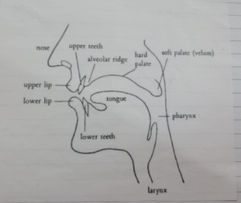
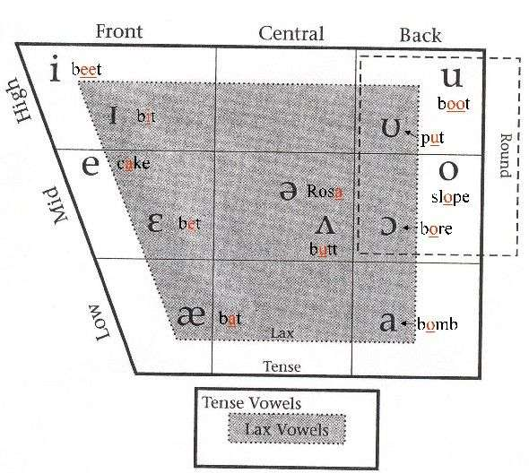
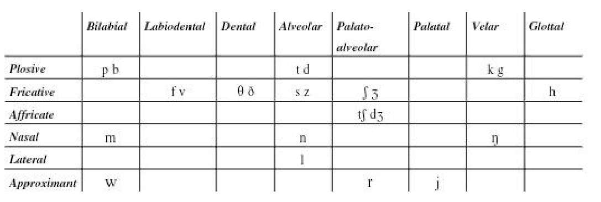

🗣️ Phonetics & Phonology
A compact reference for English sounds

Fig. 1 – Speech organs

Fig. 2 – Vowel space

Fig. 3 – Consonant places & manners
Phonetics vs Phonology
Phonetics – the study of how sounds are produced, transmitted and perceived. It deals with the physical properties of speech sounds.
- Focuses on the production of sounds
- A descriptive tool for studying phonological aspects
- About the sounds of language
Phonology – the study of how sounds function in relation to each other in a language.
- About the sound systems of language
- Studies how sounds pattern and interact
- Different from phonetics: phonetics = sounds, phonology = sound systems
Consonants · Place of Articulation
Bilabial
Lips brought together
/p/ voiceless pay
/b/ voiced bay
/m/ voiced may
Labiodental
Lower lip raised towards upper front teeth
/f/ voiceless safe
/v/ voiced save
Dental
Tip of tongue touches upper front teeth
/θ/ voiceless oath
/ð/ voiced clothe
Alveolar
Tip of tongue towards alveolar ridge
/t/ voiceless too
/s/ voiceless sue
/d/ voiced do
/z/ voiced zoo
/n/ voiced nook
/l/ voiced look
/r/ voiced rook
Palatoalveolar
Blade of tongue towards palate behind alveolar ridge
/ʃ/ voiceless pressure
/tʃ/ voiceless batch
/ʒ/ voiced pleasure
/dʒ/ voiced badge
Palatal
Further back towards the velum
/j/ voiced yes, yellow, beauty, new
The only palatal sound in English
Velar
Back of tongue towards soft palate (velum)
/k/ voiceless back
/g/ voiced bag
/ŋ/ voiced bang
/w/ voiced why (velar with lip rounding)
Glottal
Air passes through narrowed glottis
/h/ high
/ʔ/ football [fuʔbɔːl] (glottal stop)
Consonants · Manner of Articulation
Plosives
Complete closure, air blocked, released with a burst
/p/ voiceless bilabial – park
/b/ voiced bilabial – bark
/t/ voiceless alveolar – tar
/d/ voiced alveolar – dark
/k/ voiceless velar – car
/g/ voiced velar – guard
Fricatives
Near-closure creates friction noise
/f/ voiceless labiodental – wife
/v/ voiced labiodental – wives
/θ/ voiceless dental – breath
/ð/ voiced dental – breathe
/s/ voiceless alveolar – sink
/z/ voiced alveolar – zinc
/ʃ/ voiceless palatoalveolar – nation
/ʒ/ voiced palatoalveolar – evasion
/h/ glottal – help
Affricates
Plosive + fricative, slow release
/tʃ/ voiceless palatoalveolar – chin, rich
/dʒ/ voiced palatoalveolar – gin, ridge
Nasals
Complete closure, velum lowered, air escapes through nose
/m/ voiced bilabial – ram
/n/ voiced alveolar – ran
/ŋ/ voiced velar – rang
Laterals
Air escapes around the sides of the tongue
/l/ voiced alveolar lateral
clear l before vowels – light, long (tongue top raised)
dark l elsewhere – milk, ball [ɫ] (back raised)
Approximants
Tongue approaches roof, no friction – all voiced
/r/ alveolar/post-alveolar – right, brown
/j/ palatal – use, youth
/w/ velar/labio-velar with lip rounding – why, twin, square
/r/ only occurs before vowels in Southern British English
Vowels
Tongue Height
- High (Close): tongue raised close to roof – /iː/ see, /ɪ/ sit, /uː/ too, /ʊ/ put
- Mid: tongue halfway – /e/ bed, /ə/ banana, /ɜː/ girl, /ɔː/ door
- Low (Open): tongue lowered, mouth more open – /æ/ cat, /ʌ/ cup, /ɑː/ car, /ɒ/ clock
Tongue Backness
- Front: /iː/ see, /ɪ/ sit, /e/ bed, /æ/ cat
- Central: /ɜː/ girl, /ə/ banana, /ʌ/ cup
- Back: /uː/ too, /ʊ/ put, /ɔː/ door, /ɒ/ clock, /ɑː/ car
Lip Rounding
- Rounded: /uː/, /ʊ/, /ɔː/, /ɒ/ – lips pushed forward
- Unrounded: all front & central vowels; also /ɑː/ (back but unrounded)
Length
long /iː/ see
short /ɪ/ sit
long /ɜː/ girl
short /e/ bed
long /ɑː/ car
short /æ/ cat
long /ɔː/ door
short /ʌ/ cup
long /uː/ too
short /ɒ/ clock
short /ʊ/ put
short /ə/ banana
Long vowels (/ː/) differ not only in duration but also in quality.
Monophthong vs Diphthong
- Monophthong – steady quality: /iː/, /e/, /ɑː/, /ʌ/, /uː/, etc.
- Diphthong – gliding quality: /eɪ/ take, /aɪ/ five, /əʊ/ no, /eə/ care
Transcription · Important Words
Common words with IPA (frequency in parentheses)
High frequency
the /ðə/ 13 (before cons.)
the /ðiː/ 13 (before vowel)
I /aɪ/ 9
this /ðɪs/ 7
is /ɪz/ 6
you /juː/ 6
a /ə/ 5
Frequency 3
can't /kɑːnt/ 3
got /ɡɒt/ 3
window /ˈwɪndəʊ/ 3
and /ənd/ 3
at /ət/ 3
bad /bæd/ 3
in /ɪn/ 3
it /ɪt/ 3
my /maɪ/ 3
out /aʊt/ 3
she /ʃiː/ 3
that /ðæt/ 3
they /ðeɪ/ 3
to /tə/ 3
was /wəz/ 3
Frequency 2
after /ˈɑːftər/ 2
been /biːn/ 2
broke /brəʊk/ 2
shot /ʃɒt/ 2
taught /tɔːt/ 2
beat /biːt/ 2
boy /bɔɪ/ 2
by /baɪ/ 2
can /kən/ 2
had /həd/ 2
he /hiː/ 2
line /laɪn/ 2
son /sʌn/ 2
sun /sʌn/ 2
who /huː/ 2
Frequency 1
answer /ˈɑːnsə/ 1
architect /ˈɑːkɪtɛkt/ 1
bears /bɛəz/ 1
broken /ˈbrəʊkən/ 1
brother /ˈbrʌðə/ 1
burnt /bɜːnt/ 1
classes /ˈklɑːsɪz/ 1
coat /kəʊt/ 1
cold /kəʊld/ 1
copied /ˈkɒpid/ 1
crosswords /ˈkrɒswɜːdz/ 1
ever /ˈɛvə/ 1
exercises /ˈeksəsaɪzɪz/ 1
go /ɡəʊ/ 1
going /ˈɡəʊɪŋ/ 1
gone /ɡɒn/ 1
lot /lɒt/ 1
morning /ˈmɔːnɪŋ/ 1
most /məʊst/ 1
mountains /ˈmaʊntɪnz/ 1
necessary /ˈnɛsəsəri/ 1
nobody /ˈnəʊbədi/ 1
of /əv/ 1
over /ˈəʊvə/ 1
player /ˈpleɪ.ər/ 1
repaired /rɪˈpɛəd/ 1
students /ˈstjuːdənts/ 1
tired /ˈtaɪəd/ 1
understand /ˌʌndəˈstænd/ 1
what /wɒt/ 1
year /jɪə/ 1
your /jɔː/ 1
yourself /jɔːˈsɛlf/ 1
❗ Highlighted entries are words with non-obvious or irregular pronunciations — pay special attention!
📖 Reference: English phonetics & phonology • Mobile ready